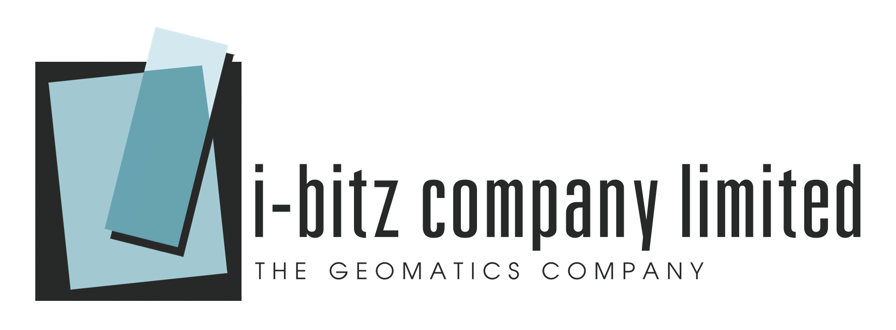

Service Providers¶
ZOO-Project is developed and supported by a number of businesses, organizations and individuals around the world.
Using a service provider is a great way to get started with ZOO-Project and also contributes to the ongoing sustainability of the project. Services include (but are not limited to):
training
setup/installation/deployment
custom integration
bug fixing
features/enhancements
core development
maintenance/packaging/distribution
documentation
The section below provides a list of service providers who can help you in getting the best out of your ZOO-Project investment.
If you are a service provider and would like to be listed on this page, please feel free to add yourself to the service provider list.
 GatewayGeo (Canada) is a company
on the East Coast of Canada that has long specialized in assisting organizations
to publish, discover and share their geospatial data through openness : OGC
services & leveraging FOSS4G software. GatewayGeo is known for its longtime
participation in the MapServer project, and has been involved in ZOO-Project
development, documentation, packaging, and training for a very long time
(including providing much of the initial documentation & workshop materials).
GatewayGeo’s popular product, MS4W, is freely available
and comes pre-configured with various OGC services running out-of-the-box,
including WPS through ZOO-Project.
GatewayGeo (Canada) is a company
on the East Coast of Canada that has long specialized in assisting organizations
to publish, discover and share their geospatial data through openness : OGC
services & leveraging FOSS4G software. GatewayGeo is known for its longtime
participation in the MapServer project, and has been involved in ZOO-Project
development, documentation, packaging, and training for a very long time
(including providing much of the initial documentation & workshop materials).
GatewayGeo’s popular product, MS4W, is freely available
and comes pre-configured with various OGC services running out-of-the-box,
including WPS through ZOO-Project.
 GeoLabs (France) is a high-tech SME leading the
development of numerous Open Source geospatial projects, including the ZOO-Project.
GeoLabs develops and provides support for the MapMint software, allowing you to
quickly organize, publish, and edit your GIS datasets on the web using Open
Standards defined by the OGC and having the ZOO-Kernel handling every processing.
GeoLabs (France) is a high-tech SME leading the
development of numerous Open Source geospatial projects, including the ZOO-Project.
GeoLabs develops and provides support for the MapMint software, allowing you to
quickly organize, publish, and edit your GIS datasets on the web using Open
Standards defined by the OGC and having the ZOO-Kernel handling every processing.
 i-bitz which has highly experienced in geoinformatics technology and geographic information system based in Bangkok, Thailand. We have professional staff to provide inventive and innovative geographic solutions to solve your immediate problems related to geoinformatics technology. Vallaris Maps Platform is our key product, as Geospatial data platform that provides tools for stored, analysis and visualize through a web browser. Moreover, Vallaris is following OGC Standard especially OGC API series and Open Data scheme.